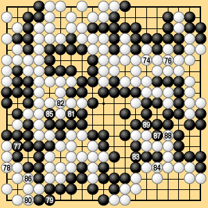

| 6.1 Normal Case (6) |
|---|
| Dia. 6-1-6 shows that the result under area rules III is the same if Black passes after White 274. |
|  | |
|
| In this game, after White 274 there are an even number of empty points on which either player could play without profit or loss, including the point in the ko (which is similar to a neutral point, because Black cannot win the ko). Because this number is even, the last competitive move can be made at White 274 under both territory rules I and area rules III. |